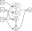
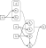

FunctionFlow.jl
Automatic lazy dependency resolution for computational DAGs in Julia.
Installation
Install FunctionFlow.jl from the Julia REPL
add ] https://github.com/nicomignoni/FunctionFlow.jl.gitQuickstart
Constructing a simple DAG
Suppose you wrote a mathematical model characterized by the following functions
f(a) = 2a + 3
g(a, b) = b^2 - a
h(g, b) = g + 4b
k(f, h) = h * (f - 1)k (generic function with 1 method)Some function arguments are themselves functions; this dependency can be expressed through a directed acycilc graph (DAG) as follows
In order to calculate k, you need to compute f, g, and h first, which can be tedious and error-prone when the computational DAG grows. Since all these functions can be eventually expressed with respect to a and b, it would be more convenient to be able to write f(a, b) (or h(a, b), for example).
FunctionFlow.jl does exactly this: it allows you to write a function as a Node of a computational DAG, which can be in turn evaluated as a function of the base arguments only.
using FunctionFlow
f_node = Node(f, :a)
g_node = Node(g, :a, :b)
h_node = Node(h, g_node, :b)
k_node = Node(k, f_node, h_node)A Node is constructed by passing the function it represents, and the "arguments", either Symbols for base arguments or other Nodes. A Node automatically shows its dependency on base arguments
julia> k_nodeNode with base (a, b)
We can now pass a and b as keyword arguments to k_node to compute k without explicitly evaluating h, g, and f beforehand
julia> k_node(a = 3, b = 2)72
By recursively substituting h, g, and f in k, we can rewrite it as explicitly dependent on a and b
k_explicit(a, b) = k(f(a), h(g(a, b), b))and then check that it would produce the same result
julia> k_explicit(3, 2) == k_node(a = 3, b = 2)true
Disambiguating DAG nodes
Sometimes, a certain quantity can be calculated through different functions. In our example, let's suppose that the quantity returned by f can be calculated through functions f1 or f2, defined, respectively, as follows
f1(a) = 2a + 3
f2(b, d) = 2.3d + bThe computational DAG becomes as follows

Let's create a Node for each of them
f1_node = Node(f1, :a)
f2_node = Node(f2, :b, :d)If we are not sure which one we want to use when building the DAG, we can create and ambiguous node, which stores both Node options
k_node_ambiguous = Node(k, Ambiguity(f1_node, f2_node), h_node)Now, if we want to resolve the DAG using the f2_node, we do
julia> k_node_ambiguous(f2_node; a = 3, b = 2, d = 4)91.8
Note that f1 is equivalent to f, so we can check that
julia> k_node_ambiguous(f1_node; a = 3, b = 2) == k_node(a = 3, b = 2)true
where we don't need d since we are not computing f2.
Ambiguity can take a default Node as well: suppose we want the DAG to resolve by default through f2; we can write
k_node_ambiguous = Node(k, Ambiguity(f1_node, f2_node; default=f2_node), h_node)so we don't need to specify the Node to resolve through
julia> k_node_ambiguous(a = 3, b = 2, d = 4)91.8
Let us consider a larger DAG

and write the updated model and computational graph and Nodes
# Model
g(a, b) = b^2 - a
h(g, b) = g + 4b
m1(e) = log(1 + e)
m2(e) = sin(e)
f1(a) = 2a + 3
f2(b, m) = 2.3m + b
k(f, h) = h * (f - 1)
# DAG
g_node = Node(g, :a, :b)
h_node = Node(h, g_node, :b)
m1_node = Node(m1, :d)
m2_node = Node(m2, :d, :e)
f1_node = Node(f1, :a)
f2_node = Node(f2, :b, Ambiguity(m1_node, m2_node, :d))
k_node_ambiguous = Node(k, Ambiguity(f1_node, f2_node; default=f2_node), h_node)julia> k_node_ambiguous(m1_node, f2_node; a = 3, b = 2, d = 4)42.315364787385874
As we did before, we can write the explicit expression for k, by recursivesly substituting the functions comprising it
k_explicit(a, b, d) = k(f2(b, m1(d)), h(g(a, b), b))and check that it produces the same result
julia> k_explicit(3, 2, 4) == k_node_ambiguous(m1_node, f2_node; a = 3, b = 2, d = 4)true
Caching
Each Node caches its value, based on the hashed (base, selection), in a Least-Recently-Used cache provided by LRUCache.jl.
using LRUCache
cache_info(k_node.cache)CacheInfo(; hits=2, misses=1, currentsize=1, maxsize=1)Default cache size is 1, but it can be incremented by passing cache_size to the Node constructor.